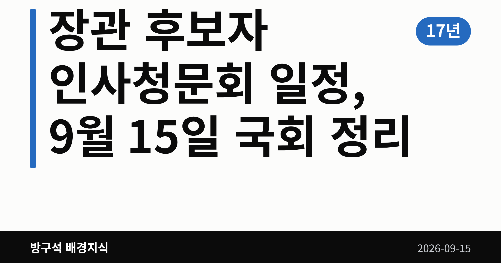
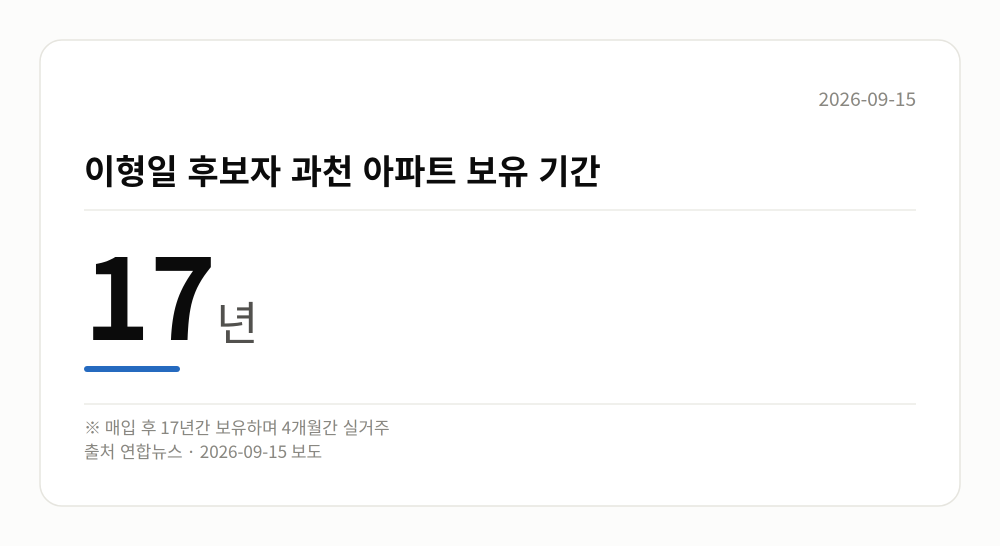

이 글은 2026년 9월 15일 기준으로 정리한 내용입니다.
장관 후보자 인사청문회 일정이 오늘(9월 15일) 하루에 몰렸습니다. 이형일 경제부총리 겸 재정경제부 장관, 김승원 법무부 장관, 이소영 중소벤처기업부 장관 후보자가 각각 국회에 출석합니다. 부동산과 청탁 의혹을 두고 여야 질의가 예고돼 있습니다.
인사청문회는 국회가 장관 등 고위공직 후보자의 자질과 도덕성을 따져 보는 절차입니다. 김승원 후보자 청문회는 법제사법위원회 주관으로 오전 10시 국회 본관에서 열립니다.
같은 날 이형일 후보자와 이소영 후보자에 대한 청문회도 각각 소관 상임위에서 진행됩니다. 같은 시각 법사위·정무위·행안위 등 여러 상임위 전체회의도 예정돼 있어 국회 일정이 촘촘합니다.
| 항목 | 수치 |
|---|---|
| 이형일 후보자 과천 아파트 보유 기간 | 17년 |
| 이형일 후보자 과천 아파트 실거주 기간 | 4개월 |
| 이소영 후보자 공실 업체 용역비 의혹 | 7,000만원 |
국민의힘은 이형일 후보자가 경기 과천 아파트를 매입한 뒤 오랜 기간 보유하는 동안 실거주는 넉 달에 그쳤다며 부동산 관련 의혹을 제기하고 있습니다.
이소영 후보자에 대해서는 서울 홍제동 '비거주 1주택' 차익 논란과 공실 업체 용역비 의혹, 전문성 부족을 지적했습니다. 민주당은 이 후보자가 예산결산특별위원회 여당 간사를 지낸 점을 들어 전문성에는 문제가 없다고 맞섰습니다. 두 후보자 본인의 구체적 반박 내용은 이번 자료에서 확인되지 않았습니다.

'제넨셀 신약 청탁 의혹'은 검찰이 기소유예(혐의가 있다고 보되 검사가 재판에 넘기지는 않는 처분)로 마무리한 사안으로, 유죄가 확정된 사건은 아닙니다.
국민의힘은 김 후보자가 김강립 당시 식약처장에게 임상시험 계획 승인을 빨리 처리해 달라고 요청한 사실을 청탁으로 규정하며, 검찰 처분이 잘못됐다고 보고 국정조사와 특별검사(특검) 도입을 촉구하고 있습니다. 무소속 한동훈 의원은 관련 녹취록을 공개했습니다.
민주당은 대가성을 입증할 새 증거가 없는 한 낙마 요인이 없다며, 해당 요청이 청탁금지법상 허용된 '공익 민원'이라는 입장입니다. 또 한 의원이 검찰에서 수사자료를 불법으로 넘겨받았다고 역공했는데, 이 주장의 사실관계는 자료로 확인되지 않았습니다.
전날 대정부질문에서 한성숙 국무총리는 지명 철회나 사퇴 건의 의향을 묻는 질문에 "청문회를 통해 소명하는 절차를 밟는 것이 적절하다"고 답했습니다. 뉴시스는 식약처 로비 등 의혹 관련 증인 채택이 이뤄지지 않아 검증이 제한적일 수 있다고 보도했습니다.
국회의원 발의 법률안 223건. 가장 최근은 제9회 전국동시지방선거 투표용지 부족 사태 등 국민참정권 침해 의혹 진상규명을 위한 특별검사의 임명 등에 관한 법률 일부개정법률안(김용민의원 등 10인).
이번 주 등록된 선거 여론조사 13건
오늘 이슈에 나온 법안은 지금 어디에
열린국회정보·중앙선거여론조사심의위원회 자료를 직접 셌습니다. 여론조사의 자세한 사항은 중앙선거여론조사심의위원회 홈페이지를 참조하세요.
여러분은 장관 후보자를 볼 때 능력과 도덕성 중 어느 쪽을 먼저 보게 되시나요?
댓글로 알려 주시면 다음 글에 반영하겠습니다.